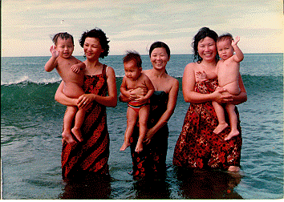

Hi! I'm Tek. I am going to tell a little bit about myself. I am 14 years old now. Ijust graduated from S.W. Brigham Middle School in the summer of 1996. I am going to Classical in September. Most of my friends are going to Mount Pleasant. I'll miss my friends but I still have my other friends at Classial, too. So it's not the end of the world for me.
I was born in Thailand and lived there for alittle while. My parents were born in Cambodia but I was born in Thailand because there was a war in Cambodia. After a while we moved to the Philipines. And after that to Rhode Island.
Most of the time I would watch T.V. or movie. During the school year I am mostly busy so I don't have too much time. On the weekend I go to different places or stay home and talk on the phone with my friends. In the summer it is the most fun because it is good weather to do a lot of things. I like going to the beach the most. But this summer I'm in the Artemis Project which is fun, too.
My Family: Both my mother and father are born in Cambodia. I was born in Thailand. I have two brothers who are born in here in the United States. My grandparents are still in Cambodia with my other relatives. But because of the war I am here.